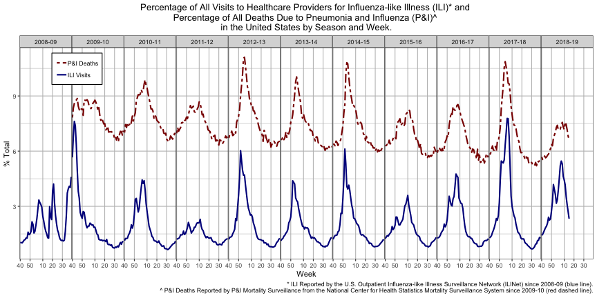

Flu Tracker
This is an R HTML document created with R studio to embed R code in chunks.
This allows you to embed plots created using R code and the ggplot R package. For example, I used data from the CDC (using package cdcfluview) to track flu-like illness (ILI) and deaths due to pneumonia and flu (P&I) since the 2009 H1N1 swine flu pandemic.
As you can see, 2017-18 was a rough flu season. Please get your flu shot! While each year's vaccine is variable in efficacy, partial protection is better than no protection, as vaccinated individuals have experienced less severe flu in "off-years".
